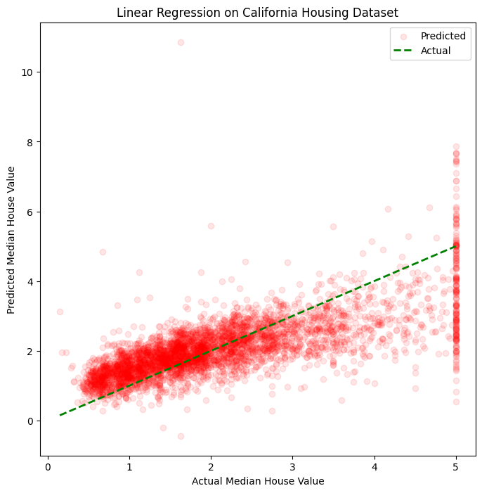
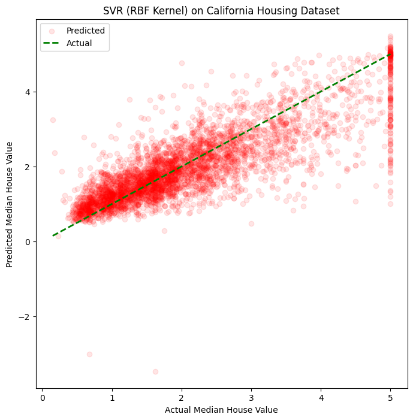
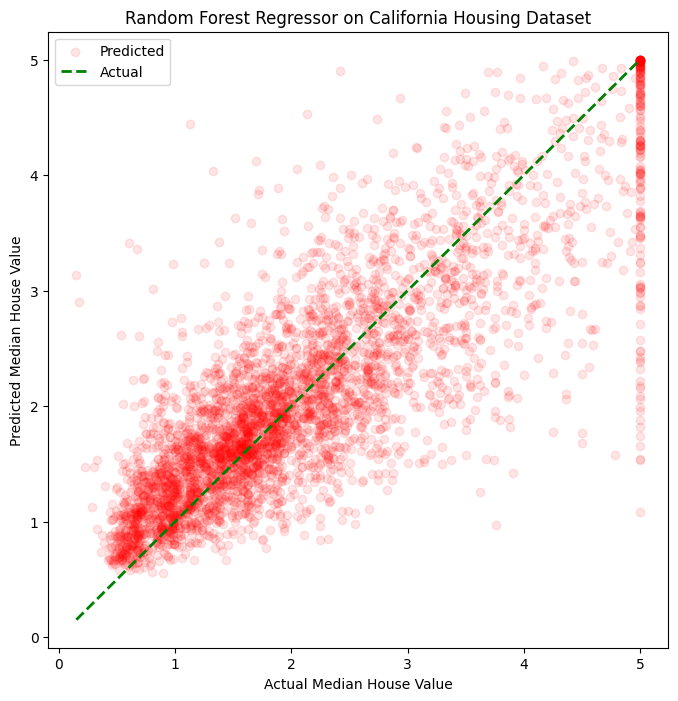

Supervised machine learning is a type of machine learning where the algorithm learns from labelled data. Labeled data means the dataset whose respective target value is already known. Depending on the output of models, we can divide Supervised machine learning models into two categories:
Regression: It predicts the continuous output variables based on the independent input variable. Such as, the prediction of house prices based on different parameters like house age, distance from the main road, location, area, etc.
Classification: It predicts the class/category of a datapoint based on the independent input variable. Here, outcome is a categorical or discrete value. For example, given image of an animal is a cat or dog.
Regression computes the relationship between the dependent variables or criterion variables and one or more independent variables or predictors.
Several types of regression techniques are available. Each of them are suited for different types of data and different types of relationships. The main types of regression techniques are:
Linear Regression
Polynomial Regression
Stepwise Regression
Decision Tree Regression
Random Forest Regression
Support Vector Regression
Ridge Regression
Lasso Regression
ElasticNet Regression
Bayesian Linear Regression
2 Linear Regression
Linear regression is used for predictive analysis. It is a linear approach for modeling the relationship between the criterion or the scalar response and the multiple predictors or explanatory variables. Linear regression focuses on the conditional probability distribution of the response given the values of the predictors.
2.1 Formula for Linear Regression Model
The simplest form of linear regression involved only one independent variable and one dependent variable. The equation for simple linear regression is:
\[
y=\theta x+b
\]
where,
\(y\) is the dependent variable
\(x\) is the independent variable
\(\theta\) is the model weights or parameters
\(b\) is the bias
Multiple Linear Regression involves more than one independent variable and one dependent variable. The equation for multiple linear regression is:
\(x_1, x_2, x_3, ..., x_n\) are the independent variables
\(\theta_1, \theta_2, ..., \theta_n\) are the model weights or parameters
\(b\) is the bias
2.2 Assumption for Linear Regression Model
A linear regression model needs to meet a few conditions in order to be accurate and dependable solutions:
Linearity: Linear relation between independent and dependent variable
Independence: Observations in the dataset are independent of each other.
Homoscedasticity: Amount of the independent variable(s) has no impact on the variance of the errors
Normality: The residuals should be normally distributed
No Multicollinearity: No high correlation between the independent variables.
2.3 California Housing dataset
We will be using California Housing dataset for visualizing regression models. This dataset was derived from the 1990 U.S. census, using one row per census block group. Code snippet for loading this dataset and checking its description:
import matplotlib.pylab as pltimport numpy as npimport pandas as pdfrom sklearn import datasets# Load the California Housing datasetcalifornia_housing = datasets.fetch_california_housing(as_frame=True)print(california_housing.DESCR)# Load the California Housing dataset as a DataFramedf_california_housing = california_housing.frame# Display the first few entries of the DataFrameprint(df_california_housing.head())
.. _california_housing_dataset:
California Housing dataset
--------------------------
**Data Set Characteristics:**
:Number of Instances: 20640
:Number of Attributes: 8 numeric, predictive attributes and the target
:Attribute Information:
- MedInc median income in block group
- HouseAge median house age in block group
- AveRooms average number of rooms per household
- AveBedrms average number of bedrooms per household
- Population block group population
- AveOccup average number of household members
- Latitude block group latitude
- Longitude block group longitude
:Missing Attribute Values: None
This dataset was obtained from the StatLib repository.
https://www.dcc.fc.up.pt/~ltorgo/Regression/cal_housing.html
The target variable is the median house value for California districts,
expressed in hundreds of thousands of dollars ($100,000).
This dataset was derived from the 1990 U.S. census, using one row per census
block group. A block group is the smallest geographical unit for which the U.S.
Census Bureau publishes sample data (a block group typically has a population
of 600 to 3,000 people).
A household is a group of people residing within a home. Since the average
number of rooms and bedrooms in this dataset are provided per household, these
columns may take surprisingly large values for block groups with few households
and many empty houses, such as vacation resorts.
It can be downloaded/loaded using the
:func:`sklearn.datasets.fetch_california_housing` function.
.. topic:: References
- Pace, R. Kelley and Ronald Barry, Sparse Spatial Autoregressions,
Statistics and Probability Letters, 33 (1997) 291-297
MedInc HouseAge AveRooms AveBedrms Population AveOccup Latitude \
0 8.3252 41.0 6.984127 1.023810 322.0 2.555556 37.88
1 8.3014 21.0 6.238137 0.971880 2401.0 2.109842 37.86
2 7.2574 52.0 8.288136 1.073446 496.0 2.802260 37.85
3 5.6431 52.0 5.817352 1.073059 558.0 2.547945 37.85
4 3.8462 52.0 6.281853 1.081081 565.0 2.181467 37.85
Longitude MedHouseVal
0 -122.23 4.526
1 -122.22 3.585
2 -122.24 3.521
3 -122.25 3.413
4 -122.25 3.422
Next, we choose some features as independent features such as, median income in block group, median house age, average number of rooms and bedrooms per household, average number of household members and block group population. In this case, our target (dependent) variable is median value of the house (in units of \(100,000\)). Also we split the \(20640\) records for train and test following \(80-20\) ratio:
# Select the specified featuresfeatures_of_interest = ["MedInc", "HouseAge", "AveRooms", "AveBedrms", "AveOccup", "Population"]# Acquiring independent and dependent variablesX = df_california_housing[features_of_interest]y = df_california_housing['MedHouseVal']# Split the data into training and testing setsfrom sklearn.model_selection import train_test_splitX_train, X_test, y_train, y_test = train_test_split(X, y, test_size=0.2, random_state=42)
For a simple linear regression model, we utilize the scikit-learn machine library through these three. generic steps:
Creating the desired model
Train the model on processed training set
Making predictions on the test set and evaluating it
Code snippet for a linear regression model:
# Create a linear regression modelfrom sklearn.linear_model import LinearRegressionmodel = LinearRegression()# Train the model on the training setmodel.fit(X_train, y_train)# Make predictions on the test sety_pred = model.predict(X_test)
We create a generic function which takes prediction label and actual label for evaluating the performance of our model. Code snippet for this function:
An \(R^2\) of \(0.51\) means that the model explains about \(51\%\) of the variance in the target variable. Since various factors influence house prices, an \(R^2\) of \(0.51\) indicates a moderate level of explanatory power. The model captures a significant portion of the variability in the target variable.
Next, we plot predictions by this model with respect to the actual data:
plt.figure(figsize=(8, 8)) # Set a square figure size# Plot y_pred in redplt.scatter(y_test, y_pred, color='red', label='Predicted', alpha=0.1)# Plot y_test as a line for referenceplt.plot([y_test.min(), y_test.max()], [y_test.min(), y_test.max()], linestyle='--', color='green', linewidth=2, label='Actual')plt.xlabel('Actual Median House Value')plt.ylabel('Predicted Median House Value')plt.title('Linear Regression on California Housing Dataset')plt.legend() # Show legend to distinguish between actual and predictedplt.show()

Figure 1: Linear Regression on the California Housing dataset
Since the red dots (predicted data) is close to the green (actual data) line, this model can predict the target variable well.
3 Nonlinear Regression
Nonlinear regression is a statistical technique which assists in describing the non linearity in relationship between independent and dependent variables. Nonlinear regression models are described with a nonlinear equation. Typically, nonlinear regression is well suited to explain relations between variables in real life data. There are a lot of nonlinear regression models, refer to the previously mentioned list of regression techniques in section Section 1 if needed. In the scope of this blog, we confine our discussions to two types of nonlinear regression.
3.1 Support Vector Regressor (SVR)
Support vector regression (SVR) is a type of support vector machine (SVM) that is used for regression tasks. It attempts to find a function that best predicts the continuous output value of target for given input values of independent variables. SVR can have both linear and non-linear kernels. We will be using a radial basis function (RBF) kernel which is a non linear one.
Code snippet for scaling the values of feature so that features with higher values can not dominate the lower value ones. Feature scaling is a must for SVR to speed up convergence and improve model performance. Also we scale the target values accordingly:
from sklearn.preprocessing import StandardScaler# Standardize the featuresscaler_X = StandardScaler()X_train_scaled = scaler_X.fit_transform(X_train)X_test_scaled = scaler_X.transform(X_test)# Standardize the target variablescaler_y = StandardScaler()# Reshape the target variable to a 1D arrayy_train_scaled = scaler_y.fit_transform(y_train.values.reshape(-1, 1)).ravel()
Similar to our prior example, we create the regression model at first:
# Create an SVR model on RBF kernelfrom sklearn.svm import SVRmodel = SVR(kernel='rbf', C=100, gamma=0.1, epsilon=0.1)# Train the modelmodel.fit(X_train_scaled, y_train_scaled.ravel())# Make predictions on the test sety_pred_scaled = model.predict(X_test_scaled)# Inverse transform the predictions to the original scaley_pred = scaler_y.inverse_transform(y_pred_scaled.reshape(-1, 1)).ravel()
Here, we can see \(R^2\) of \(0.66\) which means that the model explains about \(66\%\) of the variance in the target variable. So this model performs better than the previous model.
Next, we plot predictions by this model with respect to the actual data:
plt.figure(figsize=(8, 8)) # Set a square figure size# Plot y_pred in redplt.scatter(y_test, y_pred, color='red', label='Predicted', alpha=0.1)# Plot y_test as a line for referenceplt.plot([y_test.min(), y_test.max()], [y_test.min(), y_test.max()], linestyle='--', color='green', linewidth=2, label='Actual')plt.xlabel('Actual Median House Value')plt.ylabel('Predicted Median House Value')plt.title('SVR (RBF Kernel) on California Housing Dataset')plt.legend()plt.show()

Figure 2: Noninear Regression (SVR with RBF Kernel) on the California Housing dataset
Since the red dots (predicted data) is closer to the green (actual data) line, this model can predict the target variable well.
3.2 Random Forest Regressor
Random Forest Regression is a versatile technique for predicting numerical values. To reduce overfitting and improve overall accuracy, It combines the predictions of multiple decision trees.
Similar to our previous example, we create the regression model at first:
# Create a Random Forest Regressorfrom sklearn.ensemble import RandomForestRegressormodel = RandomForestRegressor(n_estimators=100, random_state=42)# Train the modelmodel.fit(X_train, y_train)# Make predictions on the test sety_pred = model.predict(X_test)
Here, we can see \(R^2\) of \(0.68\) which means that the model explains about \(0.68\%\) of the variance in the target variable. So this model performs better than the previous models.
Next, we plot predictions by this model with respect to the actual data:
plt.figure(figsize=(8, 8)) # Set a square figure size# Plot y_pred in redplt.scatter(y_test, y_pred, color='red', label='Predicted', alpha=0.1)# Plot y_test as a line for referenceplt.plot([y_test.min(), y_test.max()], [y_test.min(), y_test.max()], linestyle='--', color='green', linewidth=2, label='Actual')plt.xlabel('Actual Median House Value')plt.ylabel('Predicted Median House Value')plt.title('Random Forest Regressor on California Housing Dataset')plt.legend()plt.show()

Figure 3: Noninear Regression (Random Forest Regressor) on the California Housing dataset
Since the red dots (predicted data) is closer to the green (actual data) line, this model can predict the target variable very well.
Source Code
---title: "Linear and Nonlinear Regression"number-sections: trueauthor: "Md Shahedul Haque"date: "2023-11-29"categories: [Linear Regression, Nonlinear Regression, Code, Visualization]image: "regression.png"notebook-view: - notebook: _regression_visual.ipynb title: "Linear and Nonlinear Regression with scikit-learn Library" url: https://colab.research.google.com/drive/196SAQVmUmIH0K-6PqxwuliTGEdAjcexd#scrollTo=2CxyvQ57BVTD---## Regression in Machine Learning {#sec-listTypes}Supervised machine learning is a type of machine learning where the algorithm learns from labelled data. Labeled data means the dataset whose respective target value is already known. Depending on the output of models, we can divide Supervised machine learning models into two categories:1. **Regression:** It predicts the continuous output variables based on the independent input variable. Such as, the prediction of house prices based on different parameters like house age, distance from the main road, location, area, etc.2. **Classification:** It predicts the class/category of a datapoint based on the independent input variable. Here, outcome is a categorical or discrete value. For example, given image of an animal is a cat or dog.Regression computes the relationship between the dependent variables or criterion variables and one or more independent variables or predictors. Several types of regression techniques are available. Each of them are suited for different types of data and different types of relationships. The main types of regression techniques are:1. Linear Regression2. Polynomial Regression3. Stepwise Regression4. Decision Tree Regression5. Random Forest Regression6. Support Vector Regression7. Ridge Regression8. Lasso Regression9. ElasticNet Regression10. Bayesian Linear Regression## Linear RegressionLinear regression is used for predictive analysis. It is a linear approach for modeling the relationship between the criterion or the scalar response and the multiple predictors or explanatory variables. Linear regression focuses on the conditional probability distribution of the response given the values of the predictors.### Formula for Linear Regression ModelThe simplest form of linear regression involved only one independent variable and one dependent variable. The equation for simple linear regression is:$$y=\theta x+b$$where,- $y$ is the dependent variable- $x$ is the independent variable- $\theta$ is the model weights or parameters- $b$ is the biasMultiple Linear Regression involves more than one independent variable and one dependent variable. The equation for multiple linear regression is:$$y=b+\theta_1 x_1+\theta_2 x_2+\theta_3 x_3+...+\theta_n x_n$$where,- $y$ is the dependent variable- $x_1, x_2, x_3, ..., x_n$ are the independent variables- $\theta_1, \theta_2, ..., \theta_n$ are the model weights or parameters- $b$ is the bias### Assumption for Linear Regression ModelA linear regression model needs to meet a few conditions in order to be accurate and dependable solutions:- **Linearity:** Linear relation between independent and dependent variable- **Independence:** Observations in the dataset are independent of each other.- **Homoscedasticity:** Amount of the independent variable(s) has no impact on the variance of the errors- **Normality:** The residuals should be normally distributed- **No Multicollinearity:** No high correlation between the independent variables.### California Housing datasetWe will be using [California Housing dataset](https://www.dcc.fc.up.pt/~ltorgo/Regression/cal_housing.html) for visualizing regression models. This dataset was derived from the 1990 U.S. census, using one row per census block group. Code snippet for loading this dataset and checking its description:{{< embed _regression_visual.ipynb#load_dataset echo=true >}}Next, we choose some features as independent features such as, median income in block group, median house age, average number of rooms and bedrooms per household, average number of household members and block group population. In this case, our target (dependent) variable is median value of the house (in units of $100,000$). Also we split the $20640$ records for train and test following $80-20$ ratio:{{< embed _regression_visual.ipynb#feature echo=true >}}### Visualization for Linear Regression ModelFor a simple linear regression model, we utilize the scikit-learn machine library through these three. generic steps:1. Creating the desired model2. Train the model on processed training set3. Making predictions on the test set and evaluating itCode snippet for a linear regression model:{{< embed _regression_visual.ipynb#linReg_model echo=true >}}We create a generic function which takes prediction label and actual label for evaluating the performance of our model. Code snippet for this function:{{< embed _regression_visual.ipynb#performance echo=true >}}Later, we utilize this function to evaluate the performance of our linear regression model:{{< embed _regression_visual.ipynb#linReg_performance echo=true >}}An $R^2$ of $0.51$ means that the model explains about $51\%$ of the variance in the target variable. Since various factors influence house prices, an $R^2$ of $0.51$ indicates a moderate level of explanatory power. The model captures a significant portion of the variability in the target variable.Next, we plot predictions by this model with respect to the actual data:{{< embed _regression_visual.ipynb#fig-linReg echo=true >}}Since the red dots (predicted data) is close to the green (actual data) line, this model can predict the target variable well.## Nonlinear RegressionNonlinear regression is a statistical technique which assists in describing the non linearity in relationship between independent and dependent variables. Nonlinear regression models are described with a nonlinear equation. Typically, nonlinear regression is well suited to explain relations between variables in real life data. There are a lot of nonlinear regression models, refer to the previously mentioned list of regression techniques in section @sec-listTypes if needed. In the scope of this blog, we confine our discussions to two types of nonlinear regression.### Support Vector Regressor (SVR) Support vector regression (SVR) is a type of support vector machine (SVM) that is used for regression tasks. It attempts to find a function that best predicts the continuous output value of target for given input values of independent variables. SVR can have both linear and non-linear kernels. We will be using a radial basis function (RBF) kernel which is a non linear one.Code snippet for scaling the values of feature so that features with higher values can not dominate the lower value ones. Feature scaling is a must for SVR to speed up convergence and improve model performance. Also we scale the target values accordingly:{{< embed _regression_visual.ipynb#svr_scale echo=true >}}Similar to our prior example, we create the regression model at first:{{< embed _regression_visual.ipynb#svr_model echo=true >}}Then, we utilize the predefined function to evaluate the performance of this nonlinear regression model:{{< embed _regression_visual.ipynb#svr_performance echo=true >}}Here, we can see $R^2$ of $0.66$ which means that the model explains about $66\%$ of the variance in the target variable. So this model performs better than the previous model.Next, we plot predictions by this model with respect to the actual data:{{< embed _regression_visual.ipynb#fig-svr echo=true >}}Since the red dots (predicted data) is closer to the green (actual data) line, this model can predict the target variable well.### Random Forest RegressorRandom Forest Regression is a versatile technique for predicting numerical values. To reduce overfitting and improve overall accuracy, It combines the predictions of multiple decision trees.Similar to our previous example, we create the regression model at first:{{< embed _regression_visual.ipynb#rfr_model echo=true >}}Then, we use the predefined performance function to evaluate the this nonlinear regression model:{{< embed _regression_visual.ipynb#rfr_performance echo=true >}}Here, we can see $R^2$ of $0.68$ which means that the model explains about $0.68\%$ of the variance in the target variable. So this model performs better than the previous models.Next, we plot predictions by this model with respect to the actual data:{{< embed _regression_visual.ipynb#fig-rfr echo=true >}}Since the red dots (predicted data) is closer to the green (actual data) line, this model can predict the target variable very well.